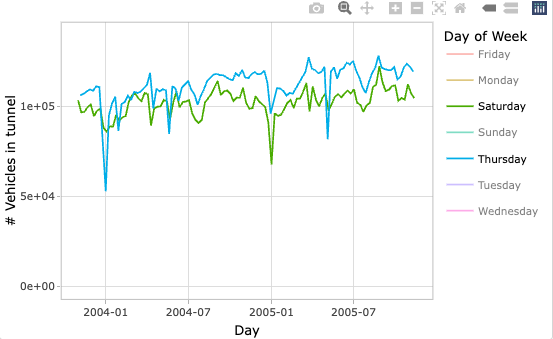

#load fpp3 after forecast to prevent masking fabletools::accuracy()
library(forecast)
library(fpp3)Practical Time Series Forecasting - Figures and Tables
Introduction
This document is a compilation of the of Figures and Tables presented in Practical Time Series With R - A Hands On Guide [2nd edition] by Shmueli, Galit; Lichtendahl Jr, Kenneth. Axelrod Schnall Publishers. Kindle Edition. C. The Datasets & R Code supplied with textbook website (with slight tweaks) is presented here to match the textbook as baseline for experimenting with code provided.
Much has changed with both R and the time series frameworks since the book was originally published, so updated R code is also provided to demonstrate alternative, more modern techniques.
Reference: Forecasting: Principles and Practice (Rob J Hyndman and George Athanasopoulos)
Chapter 2 - Time Series Date
2.3 Visualizing Time Series
Figure 2.2
amtrak_csv <- here::here("data", "Amtrak data.csv")
Amtrak.data <- read.csv(amtrak_csv)
ridership.ts <- ts(Amtrak.data$Ridership, start = c(1991,1), end = c(2004, 3), freq = 12)
# Figure 2-2
plot(ridership.ts, xlab = "Time", ylab = "Ridership", ylim = c(1300, 2300), bty = "l")
Update
See [Forecasting: Principles and Practice] https://otexts.com/fpp3/tsibbles.html
We need to reprocess the data. The CSV provided by text website has malformed dates, but there is an .xls file we can use instead.
library(fpp3)
ridership <- read_excel(here::here("data", "Amtrak data.xls"),
col_types = c("date", "numeric")) %>%
mutate(Month = yearmonth(Month)) %>%
as_tsibble(index = Month)ridership %>%
autoplot(Ridership)
Although not called for in the textbook, we can also use seasonal plot to help identify months with peak ridership and confirm a general upward trend in the later years contained in the dataset
ridership %>%
gg_season(Ridership, labels = "right") +
labs(title = "Seasonal plot of Amtrak Ridership")
We can also look at subseries to see if trends are consistent within each month.
ridership %>%
gg_subseries(Ridership) +
labs(title = 'Amtrak Ridership Trends by Month')
Figure 2.4
library(forecast)
#Amtrak.data <- read.csv("Amtrak data.csv")
ridership.ts <- ts(Amtrak.data$Ridership, start = c(1991,1), end = c(2004, 3), freq = 12)
ridership.lm <- tslm(ridership.ts ~ trend + I(trend^2))
# Figure 2-4
par(mfrow = c(2, 1))
plot(ridership.ts, xlab = "Time", ylab = "Ridership", ylim = c(1300, 2300), bty = "l")
lines(ridership.lm$fitted, lwd = 2)
ridership.ts.zoom <- window(ridership.ts, start = c(1997, 1), end = c(2000, 12))
plot(ridership.ts.zoom, xlab = "Time", ylab = "Ridership", ylim = c(1300, 2300), bty = "l")
Update
We’ll leave these as two separate plots, including the trend model on both:
library(fable)
ridership_lm <- ridership %>%
model(tslm = TSLM(Ridership ~ trend() + I(trend()^2))) %>%
augment()
ridership_lm %>%
autoplot(Ridership, color = "grey") +
geom_line(aes(y = .fitted), color = "blue")
Zoom into the years 1997-2001
ridership_lm %>%
filter(Month >= yearmonth('1997 Jan'),
Month <= yearmonth('2001 Dec')) %>%
autoplot(Ridership, color = "grey") +
geom_line(aes(y = .fitted), color = "blue")
Same as above using the filter_index .
ridership_lm %>%
filter_index('1997 Jan' ~ '2001 Dec') %>%
autoplot(Ridership, color = "grey") +
geom_line(aes(y = .fitted), color = "blue")
Interactive Data Visualizations
Interactive Visualization with Plotly
Athought the textbook suggest proprietry programs for interactive data visualizations, there are multiple open source frameworks for this as well. A popular R library is plotly, which can be used to interactively interrogate plots as demonstrated below.
Baregg Tunnel Traffic
library(plotly)
TunnelTraffic <- read_excel(here::here("data", "TunnelTraffic.xls"),
col_types = c("date", "numeric"))
tt_raw_plt <- TunnelTraffic %>%
ggplot(aes(Day, `# Vehicles in tunnel`)) +
geom_line(color = 'dark blue') +
theme_light()
ggplotly(tt_raw_plt)This plot doesn’t match the one in the textbook, but I’ve chosen it because it is also effective for comparing the annual traffic volumes, and is easy to produce using the gg_season function from the fpp3 library. The text bookplot can be reproduced using standard ggplot2 functions (with facet_wrap()). ::: {.cell}
monthly_traffic <- TunnelTraffic %>%
mutate(Month = yearmonth(Day)) %>%
group_by(Month) %>%
summarise(vehicles = mean(`# Vehicles in tunnel`)) %>%
as_tsibble(index = Month)
traffic_plt <- monthly_traffic %>%
gg_season(vehicles) +
labs(title = 'Baregg Tunnel Traffic',
y = 'Average # of Vehicles/Month')
ggplotly(traffic_plt):::
tt_wday_plt <- TunnelTraffic %>%
mutate(`Day of Week` = weekdays(Day)) %>%
ggplot(aes(Day, `# Vehicles in tunnel`, color = `Day of Week`)) +
geom_line() +
ylim(0,NA) +
theme_light()
ggplotly(tt_wday_plt)Plotly enables interactive filtering. Double click on Day of Week element in the legend to isolate a single day, subsequent clicks add additional days back to the displayed data. For example, by removing everything except Thursday and Saturday, you can reproduce the image below using the interactive plotly image above.

Chapter 3 - Performance Evaluation
Scripts adapted from Practical Time Series Forecasting - Datasets & R Code
3.1 Data Partitioning
Figure 3.1
library(forecast)
amtrak_csv <- here::here("data", "Amtrak data.csv")
Amtrak.data <- read.csv(amtrak_csv)
ridership.ts <- ts(Amtrak.data$Ridership, start = c(1991, 1), end = c(2004, 3), freq = 12)
# Figure 3-1
plot(ridership.ts, ylim = c(1300, 2600), ylab = "Ridership", xlab = "Time", bty = "l", xaxt = "n", xlim = c(1991,2006.25))
axis(1, at = seq(1991, 2006, 1), labels = format(seq(1991, 2006, 1), digits = 2))
lines(c(2004.25 - 3 , 2004.25 - 3), c(0, 3500))
lines(c(2004.25, 2004.25), c(0, 3500))
text(1996.25, 2500, "Training")
text(2002.75, 2500, "Validation")
text(2005.25, 2500, "Future")
arrows(2004 - 3,2450,1991.25,2450,code=3,length=0.1,lwd=1,angle=30)
arrows(2004.5 - 3,2450,2004,2450,code=3,length=0.1,lwd=1,angle=30)
arrows(2004.5,2450,2006,2450,code=3,length=0.1,lwd=1,angle=30)
Since the textbook omits the annotation in it’s examples beyond Figure 3.1 for clarity, there is a mismatch between the code and the graphics output. We’ll create a simple function t add the annotation to subsequent plots to keep the examples minimal. Here is Figure 3.1 reproduced with the annotation function.
source(here::here('code', 'ptfs_functions.R'))
amtrak_ts_annotationsfunction (y = 2500, y_pad = 50)
{
lines(c(2004.25 - 3, 2004.25 - 3), c(-3500, 3500))
lines(c(2004.25, 2004.25), c(-3500, 3500))
text(1996.25, y, "Training")
text(2002.75, y, "Validation")
text(2005.25, y, "Future")
arrows(2004 - 3, y - y_pad, 1991.25, y - y_pad, code = 3,
length = 0.1, lwd = 1, angle = 30)
arrows(2004.5 - 3, y - y_pad, 2004, y - y_pad, code = 3,
length = 0.1, lwd = 1, angle = 30)
arrows(2004.5, y - y_pad, 2006, y - y_pad, code = 3, length = 0.1,
lwd = 1, angle = 30)
}Updated Figure 3.1
Updating the code using the tidyverse and tidyverts frameworks requires an updated annotation function:
ridership_annotationfunction (plt, y = 2500, trn_month = yearmonth("2001 Apr"), val_month = yearmonth("2004 Apr"))
{
y_txt <- y + 75
y_arrow <- y
tv_date <- as.Date(trn_month)
vf_date <- as.Date(val_month)
min_date <- as.Date(min(plt$data$Month))
max_date <- as.Date(max(plt$data$Month))
plt + geom_vline(xintercept = tv_date) + geom_vline(xintercept = as.Date(vf_date)) +
annotate("text", x = ymd("1999 Apr 01"), y = y_txt, label = "Training") +
annotate("text", x = ymd("2002 Oct 01"), y = y_txt, label = "Validation") +
annotate("text", x = ymd("2005 Apr 01"), y = y_txt, label = "Future") +
annotate("segment", arrow = arrow_look(), x = min_date +
days(30), y = y_arrow, xend = tv_date - days(30),
yend = y_arrow) + annotate("segment", arrow = arrow_look(),
x = tv_date + days(30), y = y_arrow, xend = vf_date -
days(30), yend = y_arrow) + annotate("segment", arrow = arrow_look(),
x = vf_date + days(30), y = y_arrow, xend = max_date -
days(30), yend = y_arrow) + theme_minimal()
}library(fpp3)
library(readxl)
ridership <- read_excel(here::here("data", "Amtrak data.xls"),
col_types = c("date", "numeric")) %>%
mutate(Month = yearmonth(Month)) %>%
as_tsibble(index = Month)
ridership_h <- ridership %>%
append_row(n = 21)
ridership_h %>%
autoplot(Ridership) %>%
ridership_annotation()
Figure 3.2
stepsAhead <- 36
nTrain <- length(ridership.ts) - stepsAhead
train.ts <- window(ridership.ts, start = c(1991, 1), end = c(1991, nTrain))
valid.ts <- window(ridership.ts, start = c(1991, nTrain + 1), end = c(1991, nTrain + stepsAhead))
ridership.lm <- tslm(train.ts ~ trend + I(trend^2))
ridership.lm.pred <- forecast(ridership.lm, h = stepsAhead, level = 0)
# Figure 3-2
plot(ridership.lm.pred, ylim = c(1300, 2600), ylab = "Ridership", xlab = "Time", bty = "l", xaxt = "n", xlim = c(1991,2006.25), main = "", flty = 2)
axis(1, at = seq(1991, 2006, 1), labels = format(seq(1991, 2006, 1)))
lines(ridership.lm$fitted, lwd = 2)
lines(valid.ts)
amtrak_ts_annotations(2500)
Updated Figure 3.2
library(fable)
ridership_trn <- ridership_h %>%
filter_index("1991 Jan" ~ "2001 Mar")
ridership_val <- ridership_h %>%
filter_index("2001 Apr" ~ "2004 Mar")
# Fit the model
ridership_tslm <- ridership_trn %>%
model(tslm = TSLM(Ridership ~ trend() + I(trend()^2)))
# forecast the training and validation periods
ridership_fit <- ridership_tslm %>%
forecast(new_data = bind_rows(ridership_trn, ridership_val)) |>
mutate(is_training = Month <= yearmonth("2001 Mar"))
ridership_h %>%
autoplot(Ridership) %>%
ridership_annotation() +
# autolayer(ridership_fit, level = NULL)
# use ggplot functions to better match the original figure from the book
geom_line(data = ridership_fit,
aes(y = .mean, color = is_training, linetype = is_training)) +
scale_color_manual(values = c("TRUE" = "black", "FALSE" = "skyblue")) +
scale_linetype_manual(values = c("TRUE" = "solid", "FALSE" = "dashed")) +
guides(color = "none", linetype = "none") 
3.3 Measuring Predictive Accuracy
Table 3.1
res <- round(valid.ts - ridership.lm.pred$mean, digits = 3)
table_3_1 <-cbind(ridership.lm.pred$mean, valid.ts, res)
head(table_3_1, 3) ridership.lm.pred$mean valid.ts res
Apr 2001 1932.454 2023.792 91.338
May 2001 1939.508 2047.008 107.500
Jun 2001 1946.670 2072.913 126.243message('...')
tail(table_3_1, 1) ridership.lm.pred$mean valid.ts res
Mar 2004 2243.161 2132.446 -110.715forecast::accuracy(ridership.lm.pred$mean, valid.ts) ME RMSE MAE MPE MAPE ACF1 Theil's U
Test set -83.96208 179.8494 133.7383 -4.725374 7.07573 0.4170651 1.062068Updated Table 3.1
ridership_fc <- ridership_tslm %>%
forecast(h = "3 years")
bind_rows(ridership_fc |> head(3),
ridership_fc |> tail(1))# A fable: 4 x 4 [1M]
# Key: .model [1]
.model Month Ridership .mean
<chr> <mth> <dist> <dbl>
1 tslm 2001 Apr N(1932, 23817) 1932.
2 tslm 2001 May N(1940, 23928) 1940.
3 tslm 2001 Jun N(1947, 24046) 1947.
4 tslm 2004 Mar N(2243, 33069) 2243.# forecast accuracy for the validation period
ridership_fc |>
accuracy(ridership_val)# A tibble: 1 × 10
.model .type ME RMSE MAE MPE MAPE MASE RMSSE ACF1
<chr> <chr> <dbl> <dbl> <dbl> <dbl> <dbl> <dbl> <dbl> <dbl>
1 tslm Test -84.0 180. 134. -4.73 7.08 NaN NaN 0.417Figure 3.3
# Figure 3-3
plot(ridership.lm.pred$residuals, ylim = c(-400, 500), ylab = "Residuals", xlab = "Time", bty = "l", xaxt = "n", xlim = c(1991,2006.25), main = "")
axis(1, at = seq(1991, 2006, 1), labels = format(seq(1991, 2006, 1)))
lines(valid.ts - ridership.lm.pred$mean, lwd = 1)
amtrak_ts_annotations(500)
Figure 3.4
# Figure 3-4
hist(ridership.lm.pred$residuals, ylab = "Frequency", xlab = "Forecast Error", bty = "l", main = "")
Updated Figures 3.3 & 3.4
Rather than reproduce the textbook figures, we’ll use the gg_tsresiduals() function from the fabletools package to more easily create a common visualization of the residuals.
ridership_tslm |>
gg_tsresiduals()
Figure 3.5
nValid <- 36
nTrain <- length(ridership.ts) - nValid
train.ts <- window(ridership.ts, start = c(1991, 1), end = c(1991, nTrain))
valid.ts <- window(ridership.ts, start = c(1991, nTrain + 1), end = c(1991, nTrain + nValid))
ridership.lm <- tslm(train.ts ~ trend + I(trend^2))
ridership.lm.pred <- forecast(ridership.lm, h = nValid, level = 95)
plot(ridership.lm.pred, ylim = c(1300, 2600), ylab = "Ridership", xlab = "Time", bty = "l", xaxt = "n", xlim = c(1991,2006.25), main = "", flty = 2)
axis(1, at = seq(1991, 2006, 1), labels = format(seq(1991, 2006, 1)))
lines(ridership.lm$fitted, lwd = 2)
lines(valid.ts)
amtrak_ts_annotations(2500)
Updated Figure 3.5
ridership_fc |>
autoplot(ridership_h) |>
ridership_annotation()
3.5 Advanced Data Partitioning: Roll-Forward Validation
Figure 3.6
tumblr_csv <- here::here('data', 'Tumblr.csv')
tumblr.data <- read.csv(tumblr_csv)
people.ts <- ts(tumblr.data$People.Worldwide) / 1000000
# Run three exponential smoothing models: AAN, MMN, and MMdN.
# MMN stands for Multiplicative error, Multiplicative trend, and No seasonality. MMdN stands for Multiplicative error, Multiplicative damped trend, and No seasonality.
people.ets.AAN <- ets(people.ts, model = "AAN")
people.ets.MMN <- ets(people.ts, model = "MMN", damped = FALSE)
people.ets.MMdN <- ets(people.ts, model = "MMN", damped = TRUE)
# Create their prediction "cones" for 115 months into the future (Jun 2013 to Dec 2022).
people.ets.AAN.pred <- forecast(people.ets.AAN, h = 115, level = c(0.2, 0.4, 0.6, 0.8))
people.ets.MMN.pred <- forecast(people.ets.MMN, h = 115, level = c(0.2, 0.4, 0.6, 0.8))
people.ets.MMdN.pred <- forecast(people.ets.MMdN, h = 115, level = c(0.2, 0.4, 0.6, 0.8))
# Compare the three models' "forecast cones" visually.
par(mfrow = c(1, 3)) # This command sets the plot window to show 1 row of 3 plots.
plot(people.ets.AAN.pred, xlab = "Month", ylab = "People (in millions)", ylim = c(0, 1000))
plot(people.ets.MMN.pred, xlab = "Month", ylab="People (in millions)", ylim = c(0, 1000))
plot(people.ets.MMdN.pred, xlab = "Month", ylab="People (in millions)", ylim = c(0, 1000))
# Examine the lower and upper limits of the MMN model's prediction cones.
# people.ets.MMN.pred$lower %>% head()
# people.ets.MMN.pred$upper %>% tail()Updated Figure 3.6
NOTE:
This updated code uncovers a few issues with the fable package at the time of this run. 1. The forecast.ETS() function is slower than the forecast.ets() function for Multiplicative models. This chunck takes about 200 seconds on a MacBook Pro. 2. The level argument is not working (is ignored) for the forecast.ETS() function. 3. autoplot doesn’t display the prediction intervals if they exceed the plot y-axis limits.
tumblr_people <- tumblr.data |>
transmute(id = row_number(),
people = People.Worldwide / 1e6) |>
as_tsibble(index = id)
#fit 3 ETS models to the data [AAN, MMN, MMdN]
tumblr_ets <- tumblr_people |>
model(ets_ann = ETS(people ~ error('A') + trend('A') + season('N')),
ets_mmn = ETS(people ~ error('M') + trend('M') + season('N')),
ets_mmdn = ETS(people ~ error('M') + trend('Md') + season('N')))
#forecast 115 months into the future
library(tictoc)
tic()
tumblr_fc <- tumblr_ets |>
forecast(h = 115, level = c(0.2, 0.4, 0.6, 0.8))
tcapture <- toc()129.526 sec elapsedautoplot(tumblr_fc, tumblr_people) +
facet_grid(. ~ .model) +
ylim(-100, 1000) +
guides(colour = 'none', fill = 'none') +
scale_color_manual(values = rep('blue', 3)) +
scale_fill_manual(values = rep('blue', 3))
Figure 3.7
fixed.nValid <- 36
fixed.nTrain <- length(ridership.ts) - fixed.nValid
train.ts <- window(ridership.ts, start = c(1991, 1), end = c(1991, fixed.nTrain))
valid.ts <- window(ridership.ts, start = c(1991, fixed.nTrain + 1), end = c(1991, fixed.nTrain + fixed.nValid))
naive.fixed <- naive(train.ts, h = fixed.nValid)
naive.roll <- ts(Amtrak.data$Ridership[fixed.nTrain:(fixed.nTrain + fixed.nValid - 1)], start = c(1991, fixed.nTrain + 1), end = c(1991, fixed.nTrain + fixed.nValid), freq = 12)
# Figure 3-6
plot(train.ts, ylim = c(1300, 2600), ylab = "Ridership", xlab = "Time", bty = "l", xaxt = "n", xlim = c(1991,2006.25), main = "")
axis(1, at = seq(1991, 2006, 1), labels = format(seq(1991, 2006, 1)))
lines(naive.fixed$mean, lwd = 2, col = "blue", lty = 2)
lines(naive.roll, lwd = 2, col = "purple", lty = 2)
lines(valid.ts)
amtrak_ts_annotations()
Updated Figure 3.7
# create a rolling forecast with the naive method
ridership_roll_naive <- ridership |>
filter_index('2001 Mar' ~ '2004 Mar') |> # only need the last point for naive forecast
stretch_tsibble(.init = 1, .step = 1) |>
filter(.id != max(.id)) |>
model(naive = NAIVE(Ridership))
ridership_roll_naive_fc1 <- ridership_roll_naive |>
forecast(h = 1)
# create a rolling forecast with the fixed method
ridership_naive_fixed <- ridership_trn |>
model(naive = NAIVE(Ridership))
ridership_naive_fixed_fc <- ridership_naive_fixed |>
forecast(h = 36)
autoplot(ridership_h, Ridership) |>
ridership_annotation() +
geom_line(data = ridership_roll_naive_fc1, aes(Month, .mean), color = 'blue', linetype = 'dashed') +
autolayer(ridership_naive_fixed_fc, level = NULL, color = 'purple', linetype = 'dashed') 
Table 3.3
suppressMessages(library(tidyverse))
fixed.nValid <- 36
fixed.nTrain <- length(ridership.ts) - fixed.nValid
mae <- rep(0,fixed.nValid)
rmse <- rep(0,fixed.nValid)
mape <- rep(0,fixed.nValid)
for(i in 1:36) {
stepsAhead <- i
error <- rep(0, fixed.nValid - stepsAhead + 1)
percent.error <- rep(0, fixed.nValid - stepsAhead + 1)
for(j in fixed.nTrain:(fixed.nTrain + fixed.nValid - stepsAhead)) {
train.ts <- window(ridership.ts, start = c(1991, 1), end = c(1991, j))
valid.ts <- window(ridership.ts, start = c(1991, j + stepsAhead), end = c(1991, j + stepsAhead))
naive.pred <- naive(train.ts, h = stepsAhead)
error[j - fixed.nTrain + 1] <- valid.ts - naive.pred$mean[stepsAhead]
percent.error[j - fixed.nTrain + 1] <- error[j - fixed.nTrain + 1] / valid.ts
}
mae[i] <- mean(abs(error))
rmse[i] <- sqrt(mean(error^2))
mape[i] <- mean(abs(percent.error))
}
# mean(mae)
# mean(rmse)
# mean(mape)
train.ts <- window(ridership.ts, start = c(1991, 1), end = c(1991, fixed.nTrain))
valid.ts <- window(ridership.ts, start = c(1991, fixed.nTrain + 1), end = c(1991, fixed.nTrain + fixed.nValid))
naive.pred <- naive(train.ts, h = fixed.nValid)
snaive.pred <- snaive(train.ts, h = fixed.nValid)
# accuracy(naive.pred, valid.ts)
# accuracy(snaive.pred, valid.ts)
naive_acc <- forecast::accuracy(naive.pred, valid.ts)
method_desc <- sprintf('Rolling Forward %d-months ahead', 1:length(mae))
table_3_3 <- tibble(Method = method_desc, MAE = mae, RMSE = rmse, MAPE = mape) %>% bind_rows(tibble(Method = 'Roll Forward Overall',
MAE = mean(mae),
RMSE = mean(rmse),
MAPE = mean(mape)),
tibble(Method = 'Fixed Partition Overall',
MAE = naive_acc['Test set', 'MAE'],
RMSE = naive_acc['Test set', 'RMSE'],
MAPE = naive_acc['Test set', 'MAPE']))
table_3_3_abbr <- bind_rows(
table_3_3[1:3, ],
tibble(Method = '...'),
table_3_3[36:38,]
)
table_3_3_abbr# A tibble: 7 × 4
Method MAE RMSE MAPE
<chr> <dbl> <dbl> <dbl>
1 Rolling Forward 1-months ahead 119. 169. 0.0621
2 Rolling Forward 2-months ahead 160. 198. 0.0827
3 Rolling Forward 3-months ahead 168. 196. 0.0864
4 ... NA NA NA
5 Rolling Forward 36-months ahead 125. 125. 0.0584
6 Roll Forward Overall 158. 190. 0.0797
7 Fixed Partition Overall 116. 143. 6.02 Updated Table 3.3
ridership_roll_naive_fc <- ridership_roll_naive |>
forecast(h = 36) |>
filter_index(. ~ "2004 Apr") |>
group_by(.id) |>
mutate(h = row_number()) |>
ungroup() |>
as_fable(response = "Ridership", distribution = Ridership)
acc33_table <- ridership_roll_naive_fc |>
accuracy(ridership, by = c("h", ".model"))
acc33_table |>
mutate(Method = sprintf('Roll Forward %d-months ahead', h)) |>
select(Method, RMSE, MAE, MAPE) |>
slice(1:3, 36) # A tibble: 4 × 4
Method RMSE MAE MAPE
<chr> <dbl> <dbl> <dbl>
1 Roll Forward 1-months ahead 169. 119. 6.21
2 Roll Forward 2-months ahead 198. 160. 8.27
3 Roll Forward 3-months ahead 196. 168. 8.64
4 Roll Forward 36-months ahead 125. 125. 5.84Table 3.4
suppressMessages(library(lubridate))
table_3_4 <- bind_rows(tibble(
Period = naive.pred %>% as.data.frame %>% row.names.data.frame(),
Actual = valid.ts,
`Naive Forecast` = naive.pred$mean,
`Seasonal Naive Forecast` = snaive.pred$mean
))
table_3_4_disp <- bind_rows(
table_3_4[1:3, ],
tibble(Period = '...'),
table_3_4[nrow(table_3_4), ]
)
table_3_4_disp# A tibble: 5 × 4
Period Actual `Naive Forecast` `Seasonal Naive Forecast`
<chr> <dbl> <dbl> <dbl>
1 Apr 2001 2024. 2008. 1971.
2 May 2001 2047. 2008. 1992.
3 Jun 2001 2073. 2008. 2010.
4 ... NA NA NA
5 Mar 2004 2132. 2008. 2008.Table 3.5
snaive.pred <- snaive(train.ts, h = fixed.nValid)
snaive_acc <- forecast::accuracy(snaive.pred, valid.ts)
table_3_5 <- bind_rows(
tibble(Method = 'Naive Forecast',
MAE = naive_acc['Test set', 'MAE'],
RMSE = naive_acc['Test set', 'RMSE'],
MAPE = naive_acc['Test set', 'MAPE']),
tibble(Method = 'Seasonal Naive Forecast',
MAE = snaive_acc['Test set', 'MAE'],
RMSE = snaive_acc['Test set', 'RMSE'],
MAPE = snaive_acc['Test set', 'MAPE']))
table_3_5# A tibble: 2 × 4
Method MAE RMSE MAPE
<chr> <dbl> <dbl> <dbl>
1 Naive Forecast 116. 143. 6.02
2 Seasonal Naive Forecast 84.1 95.6 4.25Table 3.5
fixed.nValid <- 36
fixed.nTrain <- length(ridership.ts) - fixed.nValid
stepsAhead <- 1
error.naive <- rep(0, fixed.nValid - stepsAhead + 1)
percent.error.naive <- rep(0, fixed.nValid - stepsAhead + 1)
error.snaive <- rep(0, fixed.nValid - stepsAhead + 1)
percent.error.snaive <- rep(0, fixed.nValid - stepsAhead + 1)
for(j in fixed.nTrain:(fixed.nTrain + fixed.nValid - stepsAhead)) {
train.ts <- window(ridership.ts, start = c(1991, 1), end = c(1991, j))
valid.ts <- window(ridership.ts, start = c(1991, j + stepsAhead), end = c(1991, j + stepsAhead))
naive.pred <- naive(train.ts, h = stepsAhead)
snaive.pred <- snaive(train.ts, h = stepsAhead)
error.naive[j - fixed.nTrain + 1] <- valid.ts - naive.pred$mean[stepsAhead]
percent.error.naive[j - fixed.nTrain + 1] <- error.naive[j - fixed.nTrain + 1] / valid.ts
error.snaive[j - fixed.nTrain + 1] <- valid.ts - snaive.pred$mean[stepsAhead]
percent.error.snaive[j - fixed.nTrain + 1] <- error.snaive[j - fixed.nTrain + 1] / valid.ts
}
table_3_6 <- tibble(
Method = c('Naive Forecast', 'Seasonal Naive Forecast'),
MAE = c(mean(abs(error.naive)), mean(abs(error.snaive))),
RMSE = c(sqrt(mean(error.naive^2)), sqrt(mean(error.snaive^2))),
MAPE = c(mean(abs(percent.error.naive)), mean(abs(percent.error.snaive)))
)
table_3_6# A tibble: 2 × 4
Method MAE RMSE MAPE
<chr> <dbl> <dbl> <dbl>
1 Naive Forecast 119. 169. 0.0621
2 Seasonal Naive Forecast 78.5 98.2 0.0391Chapter 5 - Smoothing Methods
Scripts adapted from Practical Time Series Forecasting - Datasets & R Code
5.2 Moving Average
Amtrak Fig 5-2.R
library(forecast)
library(zoo)
amtrak_csv <- here::here("data", "Amtrak data.csv")
Amtrak.data <- read.csv(amtrak_csv)
ridership.ts <- ts(Amtrak.data$Ridership, start = c(1991, 1), end = c(2004, 3), freq = 12)
ma.trailing <- rollmean(ridership.ts, k = 12, align = "right")
ma.centered <- ma(ridership.ts, order = 12)
# Figure 5-2
plot(ridership.ts, ylim = c(1300, 2200), ylab = "Ridership", xlab = "Time", bty = "l", xaxt = "n",
xlim = c(1991,2004.25), main = "")
axis(1, at = seq(1991, 2004.25, 1), labels = format(seq(1991, 2004.25, 1)))
lines(ma.centered, lwd = 2)
lines(ma.trailing, lwd = 2, lty = 2)
legend(1994,2200, c("Ridership","Centered Moving Average", "Trailing Moving Average"), lty=c(1,1,2), lwd=c(1,2,2), bty = "n") 
Amtrak Fig 5-3.R
source(here::here('code', 'ptfs_functions.R'))
nValid <- 36
nTrain <- length(ridership.ts) - nValid
train.ts <- window(ridership.ts, start = c(1991, 1), end = c(1991, nTrain))
valid.ts <- window(ridership.ts, start = c(1991, nTrain + 1), end = c(1991, nTrain + nValid))
ma.trailing <- rollmean(train.ts, k = 12, align = "right")
last.ma <- tail(ma.trailing, 1)
ma.trailing.pred <- ts(rep(last.ma, nValid), start = c(1991, nTrain + 1), end = c(1991, nTrain + nValid), freq = 12)
# Figure 5-3
plot(train.ts, ylim = c(1300, 2600), ylab = "Ridership", xlab = "Time", bty = "l", xaxt = "n", xlim = c(1991,2006.25), main = "")
axis(1, at = seq(1991, 2006, 1), labels = format(seq(1991, 2006, 1)))
lines(ma.trailing, lwd = 2)
lines(ma.trailing.pred, lwd = 2, col = "blue", lty = 2)
lines(valid.ts)
amtrak_ts_annotations(2500)
5.3 Differencing
Amtrak Fig 5-4.R
# Figure 5-4
par(mfrow = c(2,2))
plot(ridership.ts, ylab = "Ridership", xlab = "Time", bty = "l", xlim = c(1991,2004.25), main = "Ridership")
plot(diff(ridership.ts, lag = 12), ylab = "Lag-12", xlab = "Time", bty = "l", xlim = c(1991,2004.25), main = "Lag-12 Difference")
plot(diff(ridership.ts, lag = 1), ylab = "Lag-1", xlab = "Time", bty = "l", xlim = c(1991,2004.25), main = "Lag-1 Difference")
plot(diff(diff(ridership.ts, lag = 12), lag = 1), ylab = "Lag-12, then Lag-1", xlab = "Time", bty = "l", xlim = c(1991,2004.25), main = "Twice-Differenced (Lag-12, Lag-1)")
ridership.deseasonalized <- diff(ridership.ts, lag = 12)
summary(tslm(ridership.deseasonalized ~ trend))
Call:
tslm(formula = ridership.deseasonalized ~ trend)
Residuals:
Min 1Q Median 3Q Max
-241.873 -56.022 -0.219 59.150 284.792
Coefficients:
Estimate Std. Error t value Pr(>|t|)
(Intercept) -40.3641 15.0455 -2.683 0.00815 **
trend 0.8294 0.1764 4.702 5.93e-06 ***
---
Signif. codes: 0 '***' 0.001 '**' 0.01 '*' 0.05 '.' 0.1 ' ' 1
Residual standard error: 90.74 on 145 degrees of freedom
Multiple R-squared: 0.1323, Adjusted R-squared: 0.1263
F-statistic: 22.11 on 1 and 145 DF, p-value: 5.935e-065.5 Advance Exponential Smoothing
Amtrak Fig 5-5
diff.twice.ts <- diff(diff(ridership.ts, lag = 12), lag = 1)
nValid <- 36
nTrain <- length(diff.twice.ts) - nValid
train.ts <- window(diff.twice.ts, start = c(1992, 2), end = c(1992, nTrain + 1))
valid.ts <- window(diff.twice.ts, start = c(1992, nTrain + 2), end = c(1992, nTrain + 1 + nValid))
ses <- ets(train.ts, model = "ANN", alpha = 0.2)
ses.pred <- forecast(ses, h = nValid, level = 0)
# Figure 5-5
plot(ses.pred, ylim = c(-250, 300), ylab = "Ridership (Twice-Differenced)", xlab = "Time", bty = "l", xaxt = "n", xlim = c(1991,2006.25), main = "", flty = 2)
axis(1, at = seq(1991, 2006, 1), labels = format(seq(1991, 2006, 1)))
lines(ses.pred$fitted, lwd = 2, col = "blue")
lines(valid.ts)
amtrak_ts_annotations(275, 30)
Table 5.1
# Table 5.1
ses.opt <- ets(train.ts, model = "ANN")
ses.opt.pred <- forecast(ses.opt, h = nValid, level = 0)
ses.optETS(A,N,N)
Call:
ets(y = train.ts, model = "ANN")
Smoothing parameters:
alpha = 1e-04
Initial states:
l = 1.4679
sigma: 83.5845
AIC AICc BIC
1494.723 1494.950 1502.825 forecast::accuracy(ses.pred, valid.ts) ME RMSE MAE MPE MAPE MASE
Training set -0.9407425 90.82254 68.01782 181.35457 225.2854 0.6669040
Test set 5.7226043 75.99033 54.88964 55.92139 178.3106 0.5381843
ACF1 Theil's U
Training set -0.3678952 NA
Test set -0.3665235 1.113forecast::accuracy(ses.opt.pred, valid.ts) ME RMSE MAE MPE MAPE MASE
Training set 0.1883115 82.82115 62.90072 100.5062 105.4250 0.6167316
Test set -2.0924502 75.80343 53.05667 110.2116 110.2116 0.5202123
ACF1 Theil's U
Training set -0.3398587 NA
Test set -0.3665235 0.9662741# Miscellaneous calculations below.
ar1 <- auto.arima(train.ts)
ar1Series: train.ts
ARIMA(1,0,1)(0,0,1)[12] with non-zero mean
Coefficients:
ar1 ma1 sma1 mean
0.3850 -0.8181 -0.7545 1.3775
s.e. 0.1529 0.1032 0.1100 0.7093
sigma^2 = 3894: log likelihood = -614.1
AIC=1238.2 AICc=1238.78 BIC=1251.7arima.pred <- forecast(ar1, h = nValid)
diff.once.ts <- diff(ridership.ts, lag = 12)
diff.df <- data.frame("Time" = as.vector(time(ridership.ts)), "None" = as.vector(ridership.ts), "Once" = c(rep(NA, 12), as.vector(diff.once.ts)), "Twice" = c(rep(NA, 13), as.vector(diff.twice.ts)), "Pred" = c(rep(NA, length(ridership.ts) - nValid), as.vector(ses.pred$mean)))
rts <- window(ridership.ts, start = c(1991, 1), end = c(1991, nTrain))
rets <- ets(rts)
retsETS(M,N,A)
Call:
ets(y = rts)
Smoothing parameters:
alpha = 0.5157
gamma = 8e-04
Initial states:
l = 1813.5087
s = 28.527 -16.1115 -3.9429 -121.4959 203.2382 154.7662
30.7515 74.6798 50.5657 44.6936 -250.4517 -195.2199
sigma: 0.0352
AIC AICc BIC
1437.993 1443.100 1478.500 rets.pred <- forecast(rets, h = nValid)plot(rets.pred)
Figure 5.6
ridership.ts <- ts(Amtrak.data$Ridership, start = c(1991, 1), end = c(2004, 3), freq = 12)
#
nValid <- 36
nTrain <- length(ridership.ts) - nValid
train.ts <- window(ridership.ts, start = c(1991, 1), end = c(1991, nTrain))
valid.ts <- window(ridership.ts, start = c(1991, nTrain + 1), end = c(1991, nTrain + nValid))
hwin <- ets(train.ts, model = "MAA")
hwin.pred <- forecast(hwin, h = nValid, level = 0)
# Figure 5.6
plot(hwin.pred, ylim = c(1300, 2600), ylab = "Ridership", xlab = "Time", bty = "l", xaxt = "n", xlim = c(1991,2006.25), main = "", flty = 2)
axis(1, at = seq(1991, 2006, 1), labels = format(seq(1991, 2006, 1)))
lines(hwin.pred$fitted, lwd = 2, col = "blue")
lines(valid.ts)
amtrak_ts_annotations()
Table 5.2
# Table 5.2
hwinETS(M,A,A)
Call:
ets(y = train.ts, model = "MAA")
Smoothing parameters:
alpha = 0.5518
beta = 1e-04
gamma = 1e-04
Initial states:
l = 1838.577
b = 0.8081
s = 28.4454 -11.2187 -0.5337 -124.2766 200.1969 146.8103
36.5908 76.044 60.153 44.1791 -249.4682 -206.9221
sigma: 0.0342
AIC AICc BIC
1617.596 1623.424 1665.403 hwin$states[1, ] # Initial states l b s1 s2 s3 s4
1838.5770301 0.8081064 28.4453626 -11.2186753 -0.5336870 -124.2766167
s5 s6 s7 s8 s9 s10
200.1968557 146.8102880 36.5907511 76.0439635 60.1530346 44.1790580
s11 s12
-249.4681974 -206.9221371 hwin$states[nrow(hwin$states), ] # Final states l b s1 s2 s3 s4
1944.5564806 0.8100101 44.1899049 -249.4709519 -206.9249239 28.4436406
s5 s6 s7 s8 s9 s10
-11.2161757 -0.5324645 -124.2747514 200.1936173 146.8106008 36.5892133
s11 s12
76.0565944 60.1377124 #hwin$states5.6 Summary of Exponential Smoothing in R using ets
Automatic Model Selection in ets
Table 5.4
# Table 5.4
ets.opt <- ets(train.ts, restrict = FALSE, allow.multiplicative.trend = TRUE)
ets.optETS(M,N,A)
Call:
ets(y = train.ts, restrict = FALSE, allow.multiplicative.trend = TRUE)
Smoothing parameters:
alpha = 0.555
gamma = 1e-04
Initial states:
l = 1807.9214
s = 27.0154 -11.2593 0.0101 -121.9422 199.759 149.5166
37.7252 75.4579 59.7349 47.1898 -252.1883 -211.019
sigma: 0.0342
AIC AICc BIC
1615.746 1620.232 1657.929 ets.opt.pred <- forecast(ets.opt, h = nValid, level = 0)
plot(ets.opt.pred)
Table 5.5
# Table 5.5
forecast::accuracy(hwin.pred, valid.ts) ME RMSE MAE MPE MAPE MASE
Training set 0.1382018 56.49150 45.22527 -0.07920944 2.579613 0.5482385
Test set 33.6684422 76.65107 62.16977 1.58152634 3.122042 0.7536464
ACF1 Theil's U
Training set 0.06063493 NA
Test set 0.61655528 0.4430438forecast::accuracy(ets.opt.pred, valid.ts) ME RMSE MAE MPE MAPE MASE
Training set 1.98570 56.86248 45.21332 0.02883941 2.576978 0.5480937
Test set 49.72735 88.62810 73.96379 2.39118826 3.707185 0.8966182
ACF1 Theil's U
Training set 0.06113138 NA
Test set 0.65425349 0.51351935.7 Extensions of Exponential Smoothing
Figure 5.7
# library(forecast)
suppressMessages(library(lubridate))
bike_hourly_csv <- here::here('data', "BikeSharingHourly.csv")
bike.hourly.df <- read.csv(bike_hourly_csv)
nTotal <- length(bike.hourly.df$cnt[13004:13747]) # 31 days * 24 hours/day = 744 hours
bike.hourly.msts <- msts(bike.hourly.df$cnt[13004:13747], seasonal.periods = c(24, 168), start = c(0, 1))
nTrain <- 21 * 24 # 21 days of hourly data
nValid <- nTotal - nTrain # 10 days of hourly data
yTrain.msts <- window(bike.hourly.msts, start = c(0, 1), end = c(0, nTrain))
yValid.msts <- window(bike.hourly.msts, start = c(0, nTrain + 1), end = c(0, nTotal))
bike.hourly.dshw.pred <- dshw(yTrain.msts, h = nValid)
bike.hourly.dshw.pred.mean <- msts(bike.hourly.dshw.pred$mean, seasonal.periods = c(24, 168), start = c(0, nTrain + 1))
plot(yTrain.msts, xlim = c(0,4 + 3/7), ylab = "Hourly Bike Rentals")
lines(bike.hourly.dshw.pred.mean, lwd = 2, col = "blue")
# Compare to stlm and tbats.
bike.hourly.stlm <- stlm(yTrain.msts, lambda = 0)
bike.hourly.stlm.pred <- forecast(bike.hourly.stlm, h = nValid)
bike.hourly.tbats <- tbats(yTrain.msts)
bike.hourly.tbats.pred <- forecast(bike.hourly.tbats, h = nValid) #par(mfrow = c(1, 3))
par(mfrow = c(3, 1))
plot(yTrain.msts, xlim = c(0,4 + 3/7), ylab = "Hourly Bike Rentals", ylim = c(0, 1000))
lines(bike.hourly.dshw.pred.mean, lwd = 2, col = "blue")
plot(bike.hourly.stlm.pred, ylim = c(0, 1000))
plot(bike.hourly.tbats.pred, ylim = c(0, 1000))
Figure 5.8
#library(forecast)
bike_daily_csv <- here::here("data", "BikeSharingDaily.csv")
bike.daily.df <- read.csv(bike_daily_csv)
bike.daily.msts <- msts(bike.daily.df$cnt, seasonal.periods = c(7, 365.25))
bike.daily.tbats <- tbats(bike.daily.msts)
bike.daily.tbats.pred <- forecast(bike.daily.tbats, h = 365)
bike.daily.stlm <- stlm(bike.daily.msts, s.window = "periodic", method = 'ets')
bike.daily.stlm.pred <- forecast(bike.daily.stlm, h = 365)
par(mfrow = c(2, 1))
plot(bike.daily.tbats.pred, ylim = c(0, 9000), xlab = "Year", ylab = "Daily Bike Rentals",main = "TBATS")
plot(bike.daily.stlm.pred, ylim = c(0, 9000), xlab = "Year", ylab = "Daily Bike Rentals",main = "STL + ETS")
Note … this code for stlm doesn’t appear to be adding the Level back to the forecast appropriately.
Chapter 6 - Regression-Based Models: Capturing Trend and Seasonality
Scripts adapted from Practical Time Series Forecasting - Datasets & R Code
6.1 Model with Trend
Figure 6.2
source(here::here('code', 'ptfs_functions.R'))
#| message: false
library(forecast)
library(zoo)
amtrak_csv <- here::here("data", "Amtrak data.csv")
Amtrak.data <- read.csv(amtrak_csv)
ridership.ts <- ts(Amtrak.data$Ridership, start = c(1991, 1), end = c(2004, 3), freq = 12)
nValid <- 36
nTrain <- length(ridership.ts) - nValid
train.ts <- window(ridership.ts, start = c(1991, 1), end = c(1991, nTrain))
valid.ts <- window(ridership.ts, start = c(1991, nTrain + 1), end = c(1991, nTrain + nValid))
train.lm <- tslm(train.ts ~ trend)
# Figure 6.2
plot(train.ts, xlab = "Time", ylab = "Ridership", ylim = c(1300, 2300), bty = "l")
lines(train.lm$fitted, lwd = 2)
Figure 6.3
train.lm.pred <- forecast(train.lm, h = nValid, level = 0)
plot(train.lm.pred, ylim = c(1300, 2600), ylab = "Ridership", xlab = "Time", bty = "l", xaxt = "n", xlim = c(1991,2006.25), main = "", flty = 2)
axis(1, at = seq(1991, 2006, 1), labels = format(seq(1991, 2006, 1)))
lines(train.lm.pred$fitted, lwd = 2, col = "blue")
amtrak_ts_annotations(2500)
Table 6.1
# Table 6.1
summary(train.lm)
Call:
tslm(formula = train.ts ~ trend)
Residuals:
Min 1Q Median 3Q Max
-411.29 -114.02 16.06 129.28 306.35
Coefficients:
Estimate Std. Error t value Pr(>|t|)
(Intercept) 1750.3595 29.0729 60.206 <2e-16 ***
trend 0.3514 0.4069 0.864 0.39
---
Signif. codes: 0 '***' 0.001 '**' 0.01 '*' 0.05 '.' 0.1 ' ' 1
Residual standard error: 160.2 on 121 degrees of freedom
Multiple R-squared: 0.006125, Adjusted R-squared: -0.002089
F-statistic: 0.7456 on 1 and 121 DF, p-value: 0.3896Figure 6.4
train.lm.expo.trend <- tslm(train.ts ~ trend, lambda = 0)
train.lm.expo.trend.pred <- forecast(train.lm.expo.trend, h = nValid, level = 0)
train.lm.linear.trend <- tslm(train.ts ~ trend, lambda = 1)
train.lm.linear.trend.pred <- forecast(train.lm.linear.trend, h = nValid, level = 0)
# Figures 6-3/6-4
plot(train.lm.expo.trend.pred, ylim = c(1300, 2600), ylab = "Ridership", xlab = "Time", bty = "l", xaxt = "n", xlim = c(1991,2006.25), main = "", flty = 2)
axis(1, at = seq(1991, 2006, 1), labels = format(seq(1991, 2006, 1)))
lines(train.lm.expo.trend.pred$fitted, lwd = 2, col = "blue") # Added in 6-4
lines(train.lm.linear.trend.pred$fitted, lwd = 2, col = "black", lty = 3)
lines(train.lm.linear.trend.pred$mean, lwd = 2, col = "black", lty = 3)
lines(valid.ts)
amtrak_ts_annotations(2500)
Table 6.2
train.lm.poly.trend <- tslm(train.ts ~ trend + I(trend^2))
summary(train.lm.poly.trend)
Call:
tslm(formula = train.ts ~ trend + I(trend^2))
Residuals:
Min 1Q Median 3Q Max
-344.79 -101.86 40.89 98.54 279.81
Coefficients:
Estimate Std. Error t value Pr(>|t|)
(Intercept) 1888.88401 40.91521 46.166 < 2e-16 ***
trend -6.29780 1.52327 -4.134 6.63e-05 ***
I(trend^2) 0.05362 0.01190 4.506 1.55e-05 ***
---
Signif. codes: 0 '***' 0.001 '**' 0.01 '*' 0.05 '.' 0.1 ' ' 1
Residual standard error: 148.8 on 120 degrees of freedom
Multiple R-squared: 0.1499, Adjusted R-squared: 0.1358
F-statistic: 10.58 on 2 and 120 DF, p-value: 5.844e-056.2 Model with Seasonality
Table 6.3
# Table 6.3
train.lm.season <- tslm(train.ts ~ season)
summary(train.lm.season)
Call:
tslm(formula = train.ts ~ season)
Residuals:
Min 1Q Median 3Q Max
-276.165 -52.934 5.868 54.544 215.081
Coefficients:
Estimate Std. Error t value Pr(>|t|)
(Intercept) 1573.97 30.58 51.475 < 2e-16 ***
season2 -42.93 43.24 -0.993 0.3230
season3 260.77 43.24 6.030 2.19e-08 ***
season4 245.09 44.31 5.531 2.14e-07 ***
season5 278.22 44.31 6.279 6.81e-09 ***
season6 233.46 44.31 5.269 6.82e-07 ***
season7 345.33 44.31 7.793 3.79e-12 ***
season8 396.66 44.31 8.952 9.19e-15 ***
season9 75.76 44.31 1.710 0.0901 .
season10 200.61 44.31 4.527 1.51e-05 ***
season11 192.36 44.31 4.341 3.14e-05 ***
season12 230.42 44.31 5.200 9.18e-07 ***
---
Signif. codes: 0 '***' 0.001 '**' 0.01 '*' 0.05 '.' 0.1 ' ' 1
Residual standard error: 101.4 on 111 degrees of freedom
Multiple R-squared: 0.6348, Adjusted R-squared: 0.5986
F-statistic: 17.54 on 11 and 111 DF, p-value: < 2.2e-16train.lm.season.pred <- forecast(train.lm.season, h = nValid, level = 0)Figure 6.6
# Figure 6-6
par(mfrow = c(2,1))
plot(train.lm.season.pred, ylim = c(1300, 2625), ylab = "Ridership", xlab = "Time", bty = "l", xaxt = "n", xlim = c(1991,2006.25), main = "", flty = 2)
axis(1, at = seq(1991, 2006, 1), labels = format(seq(1991, 2006, 1)))
lines(train.lm.season.pred$fitted, lwd = 2, col = "blue")
lines(valid.ts)
amtrak_ts_annotations(2500)
plot(train.lm.season.pred$residuals, ylim = c(-400, 550), ylab = "Residuals", xlab = "Time", bty = "l", xaxt = "n", xlim = c(1991,2006.25), main = "")
axis(1, at = seq(1991, 2006, 1), labels = format(seq(1991, 2006, 1)))
lines(train.ts - train.lm.season.pred$fitted)
lines(valid.ts - train.lm.season.pred$mean)
amtrak_ts_annotations(500)
6.3 Model with Trend and Seasonality
Table 6.4
train.lm.trend.season <- tslm(train.ts ~ trend + I(trend^2) + season)
train.lm.trend.season.pred <- forecast(train.lm.trend.season, h = nValid, level = 0)
# Table 6-4
summary(train.lm.trend.season)
Call:
tslm(formula = train.ts ~ trend + I(trend^2) + season)
Residuals:
Min 1Q Median 3Q Max
-213.775 -39.363 9.711 42.422 152.187
Coefficients:
Estimate Std. Error t value Pr(>|t|)
(Intercept) 1.697e+03 2.768e+01 61.318 < 2e-16 ***
trend -7.156e+00 7.293e-01 -9.812 < 2e-16 ***
I(trend^2) 6.074e-02 5.698e-03 10.660 < 2e-16 ***
season2 -4.325e+01 3.024e+01 -1.430 0.15556
season3 2.600e+02 3.024e+01 8.598 6.60e-14 ***
season4 2.606e+02 3.102e+01 8.401 1.83e-13 ***
season5 2.938e+02 3.102e+01 9.471 6.89e-16 ***
season6 2.490e+02 3.102e+01 8.026 1.26e-12 ***
season7 3.606e+02 3.102e+01 11.626 < 2e-16 ***
season8 4.117e+02 3.102e+01 13.270 < 2e-16 ***
season9 9.032e+01 3.102e+01 2.911 0.00437 **
season10 2.146e+02 3.102e+01 6.917 3.29e-10 ***
season11 2.057e+02 3.103e+01 6.629 1.34e-09 ***
season12 2.429e+02 3.103e+01 7.829 3.44e-12 ***
---
Signif. codes: 0 '***' 0.001 '**' 0.01 '*' 0.05 '.' 0.1 ' ' 1
Residual standard error: 70.92 on 109 degrees of freedom
Multiple R-squared: 0.8246, Adjusted R-squared: 0.8037
F-statistic: 39.42 on 13 and 109 DF, p-value: < 2.2e-16Figure 6.7
# Figure 6-7
par(mfrow = c(2,1))
plot(train.lm.trend.season.pred, ylim = c(1300, 2625), ylab = "Ridership", xlab = "Time", bty = "l", xaxt = "n", xlim = c(1991,2006.25), main = "", flty = 2)
axis(1, at = seq(1991, 2006, 1), labels = format(seq(1991, 2006, 1)))
lines(train.lm.trend.season.pred$fitted, lwd = 2, col = "blue")
lines(valid.ts)
amtrak_ts_annotations(2500)
plot(train.lm.trend.season.pred$residuals, ylim = c(-400, 550), ylab = "Residuals", xlab = "Time", bty = "l", xaxt = "n", xlim = c(1991,2006.25), main = "")
axis(1, at = seq(1991, 2006, 1), labels = format(seq(1991, 2006, 1)))
lines(train.ts - train.lm.trend.season.pred$fitted)
lines(valid.ts - train.lm.trend.season.pred$mean)
amtrak_ts_annotations(500)
Chapter 7 - Regression-Based Models: Autocorrelation & External Information
Scripts adapted from Practical Time Series Forecasting - Datasets & R Code
7.1 Autocorrelation
Figure 7.2
source(here::here('code', 'ptfs_functions.R'))
#| message: false
library(forecast)
library(zoo)
amtrak_csv <- here::here("data", "Amtrak data.csv")
Amtrak.data <- read.csv(amtrak_csv)
ridership.ts <- ts(Amtrak.data$Ridership, start = c(1991, 1), end = c(2004, 3), freq = 12)
ridership.24.ts <- window(ridership.ts, start = c(1991, 1), end = c(1991, 24))
# Figure 7-2
Acf(ridership.24.ts, lag.max = 12, main = "")
Figure 7.3
nValid <- 36
nTrain <- length(ridership.ts) - nValid
train.ts <- window(ridership.ts, start = c(1991, 1), end = c(1991, nTrain))
valid.ts <- window(ridership.ts, start = c(1991, nTrain + 1), end = c(1991, nTrain + nValid))
train.lm.trend.season <- tslm(train.ts ~ trend + I(trend^2) + season)
# Figure 7-3
Acf(train.lm.trend.season$residuals, lag.max = 12, main = "")$acf
, , 1
[,1]
[1,] 1.00000000
[2,] 0.60405883
[3,] 0.44983171
[4,] 0.33730830
[5,] 0.25329034
[6,] 0.21565844
[7,] 0.15901326
[8,] 0.17676683
[9,] 0.17553762
[10,] 0.17140882
[11,] 0.10739472
[12,] 0.11976519
[13,] 0.085129427.2 Improving Forecasts by Capturing Autocorrelation: AR and ARIMA Models
Figure 7.4
train.res.arima <- Arima(train.lm.trend.season$residuals, order = c(1,0,0))
train.res.arima.pred <- forecast(train.res.arima, h = nValid)
# Figure 7-4
plot(train.lm.trend.season$residuals, ylim = c(-250, 250), ylab = "Residuals",
xlab = "Time", bty = "l", xaxt = "n", xlim = c(1991,2006.25), main = "")
axis(1, at = seq(1991, 2006, 1), labels = format(seq(1991, 2006, 1)))
lines(train.res.arima.pred$fitted, lwd = 2, col = "blue")
amtrak_ts_annotations(225)
summary(train.res.arima)Series: train.lm.trend.season$residuals
ARIMA(1,0,0) with non-zero mean
Coefficients:
ar1 mean
0.5998 0.3728
s.e. 0.0712 11.8408
sigma^2 = 2876: log likelihood = -663.54
AIC=1333.08 AICc=1333.29 BIC=1341.52
Training set error measures:
ME RMSE MAE MPE MAPE MASE
Training set -0.1223159 53.19141 39.8277 103.3885 175.2219 0.5721356
ACF1
Training set -0.07509305Figure 7.5
# Figure 7-5
Acf(train.res.arima$residuals, lag.max = 12, main = "")
Table 7.2
library(lubridate)
bike_daily_csv <- here::here("data", "BikeSharingDaily.csv")
bike.df <- read.csv(bike_daily_csv)
bike.df$Date <- as.Date(bike.df$dteday, format = "%Y-%m-%d")
bike.df$Month <- month(bike.df$Date, label = TRUE)
bike.df$DOW <- wday(bike.df$Date, label = TRUE)
bike.df$WorkingDay <- factor(bike.df$workingday, levels = c(0, 1), labels = c("Not_Working", "Working"))
bike.df$Weather <- factor(bike.df$weathersit, levels = c(1, 2, 3), labels = c("Clear", "Mist", "Rain_Snow"))
# Create dummy variables.
Month.dummies <- model.matrix(~ 0 + Month, data = bike.df)
DOW.dummies <- model.matrix(~ 0 + DOW, data = bike.df)
WorkingDay_Weather.dummies <- model.matrix(~ 0 + WorkingDay:Weather, data = bike.df)
# Change the names of the dummy variables.
colnames(Month.dummies) <- gsub("Month", "", colnames(Month.dummies))
colnames(DOW.dummies) <- gsub("DOW", "", colnames(DOW.dummies))
colnames(WorkingDay_Weather.dummies) <- gsub("WorkingDay", "", colnames(WorkingDay_Weather.dummies))
colnames(WorkingDay_Weather.dummies) <- gsub("Weather", "", colnames(WorkingDay_Weather.dummies))
colnames(WorkingDay_Weather.dummies) <- gsub(":", "_", colnames(WorkingDay_Weather.dummies))
# Set up training and validation sets.
x <- as.data.frame(cbind(Month.dummies[, -12], DOW.dummies[, -7], WorkingDay_Weather.dummies[, -6]))
y <- bike.df$cnt
nTotal <- length(y)
nValid <- 90
nTrain <- nTotal - nValid
xTrain <- x[1:nTrain, ]
yTrain <- y[1:nTrain]
xValid <- x[(nTrain + 1):nTotal, ]
yValid <- y[(nTrain + 1):nTotal]
# Fit tslm.
yTrain.ts <- ts(yTrain)
formula <- as.formula(paste("yTrain.ts", paste(c("trend", colnames(xTrain)), collapse = "+"), sep = "~"))
bike.tslm <- tslm(formula, data = xTrain, lambda = 1)
options(scipen = 999, digits = 6)
summary(bike.tslm)
Call:
tslm(formula = formula, data = xTrain, lambda = 1)
Residuals:
Min 1Q Median 3Q Max
-3197 -390 47 450 3743
Coefficients:
Estimate Std. Error t value Pr(>|t|)
(Intercept) -483.43 330.21 -1.46 0.1437
trend 6.28 0.18 34.84 < 0.0000000000000002 ***
Jan 296.66 172.94 1.72 0.0868 .
Feb 542.60 174.94 3.10 0.0020 **
Mar 1423.11 171.91 8.28 0.00000000000000078 ***
Apr 2075.00 172.88 12.00 < 0.0000000000000002 ***
May 2682.19 171.03 15.68 < 0.0000000000000002 ***
Jun 2780.76 171.95 16.17 < 0.0000000000000002 ***
Jul 2406.31 171.51 14.03 < 0.0000000000000002 ***
Aug 2322.29 172.12 13.49 < 0.0000000000000002 ***
Sep 2418.41 172.19 14.04 < 0.0000000000000002 ***
Oct 1715.85 194.09 8.84 < 0.0000000000000002 ***
Nov 833.77 198.45 4.20 0.00003043204899398 ***
Sun -364.19 114.82 -3.17 0.0016 **
Mon -632.85 207.41 -3.05 0.0024 **
Tue -492.70 231.53 -2.13 0.0337 *
Wed -495.55 229.81 -2.16 0.0314 *
Thu -422.88 229.57 -1.84 0.0659 .
Fri -413.30 227.78 -1.81 0.0701 .
Not_Working_Clear 1492.13 293.09 5.09 0.00000047346122692 ***
Working_Clear 1969.21 219.67 8.96 < 0.0000000000000002 ***
Not_Working_Mist 971.77 306.89 3.17 0.0016 **
Working_Mist 1279.92 222.83 5.74 0.00000001452898551 ***
Not_Working_Rain_Snow -1728.35 461.55 -3.74 0.0002 ***
---
Signif. codes: 0 '***' 0.001 '**' 0.01 '*' 0.05 '.' 0.1 ' ' 1
Residual standard error: 773 on 617 degrees of freedom
Multiple R-squared: 0.844, Adjusted R-squared: 0.838
F-statistic: 145 on 23 and 617 DF, p-value: <0.0000000000000002Figure 7.6
# Make tslm forecasts.
bike.tslm.pred <- forecast(bike.tslm, newdata = xValid)
plot(bike.tslm.pred, ylim = c(0, 9000), xlab = "Days", ylab = "Daily Bike Rentals")
Walmart Store Data
Figure 7.7 and 7.8 use data from https://www.kaggle.com/competitions/walmart-recruiting-store-sales-forecasting/data. The dataset is not included here as it would violate the terms of use.
Chapter 8 - Forecasting Binary Outcomes
Scripts adapted from Practical Time Series Forecasting - Datasets & R Code
8.4 Example: Rainfall in Melbourne, Australia
Figure 8.1
library(caret)
library(readxl)
library(lubridate)
library(tidyverse)
rain_xls <- here::here("data", "MelbourneRainfall.xls")
rain.df <- read_excel(rain_xls)
names(rain.df) <- c("Date", "Rainfall")
rain_year <- rain.df %>%
mutate(Rainy = ifelse(Rainfall > 0, 1, 0),
Month = as_factor(month(Date)),
Year = year(Date)) %>%
group_by(Month, Year) %>%
summarise(p_rain = sum(Rainy) / n())
rain_all <- rain_year %>%
group_by(Month) %>%
summarize(p_rain = mean(p_rain))
rain_year %>%
ggplot(aes(Month, p_rain)) +
geom_line(aes(group = Year)) +
geom_line(data = rain_all, color = "blue", group = 1)
Table 8.1
library(caret)
library(readxl)
rain_xls <- here::here("data", "MelbourneRainfall.xls")
rain.df <- read_excel(rain_xls)
names(rain.df) <- c("Date", "Rainfall")
rain.df$Date <- as.Date(rain.df$Date, format="%m/%d/%Y")
rain.df$Rainy <- ifelse(rain.df$Rainfall > 0, 1, 0)
nPeriods <- length(rain.df$Rainy)
rain.df$Lag1 <- c(NA,rain.df$Rainfall[1:(nPeriods-1)])
rain.df$t <- seq(1, nPeriods, 1)
rain.df$Seasonal_sine = sin(2 * pi * rain.df$t / 365.25)
rain.df$Seasonal_cosine = cos(2 * pi * rain.df$t / 365.25)
train.df <- rain.df[rain.df$Date <= as.Date("12/31/2009", format="%m/%d/%Y"), ]
train.df <- train.df[-1,]
valid.df <- rain.df[rain.df$Date > as.Date("12/31/2009", format="%m/%d/%Y"), ]
xvalid <- valid.df[, c(4,6,7)]
head(rain.df)# A tibble: 6 × 7
Date Rainfall Rainy Lag1 t Seasonal_sine Seasonal_cosine
<date> <dbl> <dbl> <dbl> <dbl> <dbl> <dbl>
1 2000-01-01 0.4 1 NA 1 0.0172 1.00
2 2000-01-02 0 0 0.4 2 0.0344 0.999
3 2000-01-03 0 0 0 3 0.0516 0.999
4 2000-01-04 3.4 1 0 4 0.0688 0.998
5 2000-01-05 1.4 1 3.4 5 0.0859 0.996
6 2000-01-06 0 0 1.4 6 0.103 0.995Table 8.2
rainy.lr <- glm(Rainy ~ Lag1 + Seasonal_sine + Seasonal_cosine, data = train.df, family = "binomial")
summary(rainy.lr)
Call:
glm(formula = Rainy ~ Lag1 + Seasonal_sine + Seasonal_cosine,
family = "binomial", data = train.df)
Coefficients:
Estimate Std. Error z value Pr(>|z|)
(Intercept) -0.7689 0.0386 -19.93 < 0.0000000000000002 ***
Lag1 0.1119 0.0114 9.84 < 0.0000000000000002 ***
Seasonal_sine -0.2688 0.0505 -5.32 0.00000010128789 ***
Seasonal_cosine -0.3713 0.0507 -7.33 0.00000000000023 ***
---
Signif. codes: 0 '***' 0.001 '**' 0.01 '*' 0.05 '.' 0.1 ' ' 1
(Dispersion parameter for binomial family taken to be 1)
Null deviance: 4751.8 on 3651 degrees of freedom
Residual deviance: 4533.7 on 3648 degrees of freedom
AIC: 4542
Number of Fisher Scoring iterations: 4Table 8.3
rainy.lr.pred <- predict(rainy.lr, xvalid, type = "response")
confusionMatrix(as.factor(ifelse(rainy.lr$fitted > 0.5, 1, 0)),
as.factor(train.df$Rainy), positive="1")Confusion Matrix and Statistics
Reference
Prediction 0 1
0 2251 1115
1 104 182
Accuracy : 0.666
95% CI : (0.651, 0.682)
No Information Rate : 0.645
P-Value [Acc > NIR] : 0.00357
Kappa : 0.117
Mcnemar's Test P-Value : < 0.0000000000000002
Sensitivity : 0.1403
Specificity : 0.9558
Pos Pred Value : 0.6364
Neg Pred Value : 0.6687
Prevalence : 0.3551
Detection Rate : 0.0498
Detection Prevalence : 0.0783
Balanced Accuracy : 0.5481
'Positive' Class : 1
confusionMatrix(as.factor(ifelse(rainy.lr.pred > 0.5, 1, 0)),
as.factor(valid.df$Rainy), positive="1")Confusion Matrix and Statistics
Reference
Prediction 0 1
0 373 220
1 21 55
Accuracy : 0.64
95% CI : (0.602, 0.676)
No Information Rate : 0.589
P-Value [Acc > NIR] : 0.00404
Kappa : 0.165
Mcnemar's Test P-Value : < 0.0000000000000002
Sensitivity : 0.2000
Specificity : 0.9467
Pos Pred Value : 0.7237
Neg Pred Value : 0.6290
Prevalence : 0.4111
Detection Rate : 0.0822
Detection Prevalence : 0.1136
Balanced Accuracy : 0.5734
'Positive' Class : 1
Reference: Practical Time Series Forecasting with R: A Hands-On Guide
by Galit Schmueli
ISBN-10: 0997847921